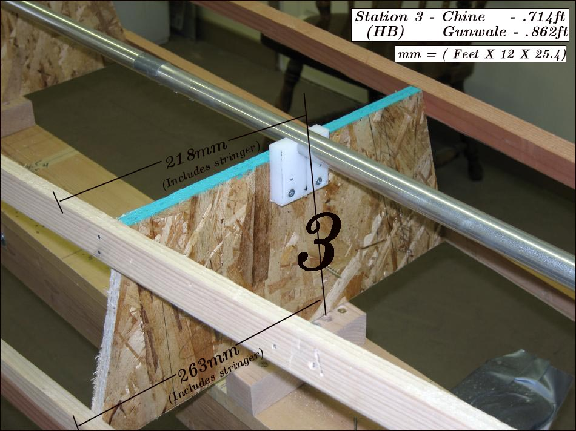

| Sonnet 14 / 16 ( page 6 of 6) | Menu Previous Page Next Page |
|

The Sonnet 14 and 16 "Offset Tables" represent the outside dimensions of the kayak. When creating the strongback stations (above), the width of the wood stringers must be taken into account. If the stringers ( gunwales and chines) are .75in wide, then the Half Breadth (HB) offsets must be reduced in width by that amount as seen in the pic above. You can reduce the offsets first and then cut out the stations, or simply make the stations based on the original offsets, and then cut off the station ends equal to the width of the stringers. This does not effect the station height, only it's width. In the Sonnet 16 pic above, the stations were made full size, and then the ends cut off by .75in (3/4in).
The Sonnet 14 offsets represent the dimensions for a 22" beam, and the Sonnet 16 offsets represent the dimensions for a 21" beam, including the stringers. For the wider versions, add the width of the stringers ( 3/4") to the offsets given. Refer to the Folding Kayak Builders Manual for "Offset" instructions. Use the {Back} key to return. |
|